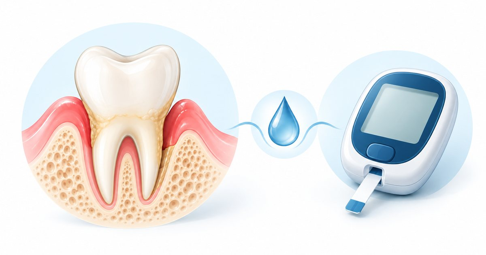

Information générale. Cet article s’appuie sur des recommandations publiées. Il ne constitue ni un diagnostic, ni une prescription, ni un conseil personnalisé : seul un examen par un chirurgien-dentiste ou un médecin permet de décider de la prise en charge qui vous convient. Ne commencez et n’arrêtez aucun traitement sur la seule foi de cet article.
L'essentiel
- Une glycémie mal contrôlée est associée à un risque plus élevé et à une gravité plus importante de parodontite.
- Les personnes atteintes de parodontite ont un risque accru de dérèglement de la glycémie et de diabète de type 2.
- Dans les études analysées par le consensus, le traitement parodontal s’accompagne d’une baisse moyenne de l’HbA1c d’environ 0,3 à 0,5 point à 3 mois chez les personnes diabétiques. Cette baisse ne remplace pas le traitement du diabète.
- Le traitement parodontal non chirurgical n’a pas montré de problème de sécurité particulier chez les personnes diabétiques, mais les effets indésirables ont été peu étudiés. Ne modifiez jamais votre traitement du diabète sans l’avis de votre médecin.
Le diabète aggrave les risques pour les gencives
Selon le consensus, l’hyperglycémie est associée à un risque accru et à une gravité plus élevée de parodontite, ainsi qu’à de moins bons résultats après traitement parodontal. Chez les personnes dont le diabète est mal contrôlé, des substances de l’inflammation produites en excès seraient impliquées dans la destruction plus importante des tissus de soutien.
La parodontite pèse sur la glycémie
Les personnes atteintes de parodontite ont un risque accru de dérèglement de la glycémie, de résistance à l’insuline et de diabète de type 2. Chez les personnes diabétiques, la parodontite est associée à davantage de complications, au niveau des petits comme des gros vaisseaux, et à une mortalité plus élevée. Ces données décrivent des associations observées dans les études.
Ce que change le traitement parodontal
- Dans les études analysées par le consensus, le traitement parodontal s’accompagne en moyenne d’une baisse de l’HbA1c (le reflet de la glycémie sur environ trois mois) de 0,27 à 0,48 point de pourcentage, environ 3 mois plus tard. Cette baisse ne remplace pas le traitement du diabète : ne modifiez jamais votre traitement sans l’avis de votre médecin.
- Une revue Cochrane de 2022 (35 essais, 3 249 participants) estime, avec un niveau de preuve modéré, que le traitement parodontal fait baisser l’HbA1c d’environ 0,4 point à 3-4 mois et d’environ 0,3 point à 6 mois. À 12 mois, une seule étude est disponible : les effets à plus long terme restent à confirmer.
- Pour le diabète de type 1, les preuves sont insuffisantes.
- Les antibiotiques ajoutés au surfaçage n’apportent pas de bénéfice supplémentaire.
- Le traitement parodontal non chirurgical n’a pas montré de problème de sécurité particulier chez les personnes diabétiques, mais les effets indésirables ont été peu étudiés.
Les conseils du consensus aux patients
- Savoir que le diabète augmente le risque de maladie parodontale.
- Se brosser les dents au moins deux fois par jour pendant deux minutes et brosser chaque jour les espaces entre les dents, selon les conseils personnalisés de son chirurgien-dentiste.
- Consulter rapidement en cas de signes d’alerte (gencives rouges ou gonflées, saignements, mauvaise haleine, dents qui se déchaussent, tartre).
- Faire des contrôles dentaires réguliers, au moins une fois par an, même sans symptôme.
- Informer son dentiste de son diabète, de son traitement et de ses derniers résultats d’HbA1c, et tenir son médecin au courant des soins dentaires. Votre dentiste peut vous demander un résultat d’HbA1c de moins de 3 mois avant certains soins.
Que signifie une baisse de 0,4 point d’HbA1c ?
L’HbA1c reflète la glycémie moyenne des trois derniers mois. Une baisse de 0,4 point de pourcentage correspond, par exemple, à une valeur qui passerait de 8,0 % à environ 7,6 %. Les revues d’études décrivent un effet moyen : il varie d’une personne à l’autre. Il ne remplace pas le traitement du diabète, et vous ne devez jamais modifier votre traitement sans l’avis de votre médecin.
Si vous êtes diabétique : trois réflexes
- Faire contrôler vos gencives au moins une fois par an, même sans symptôme.
- Informer votre dentiste de votre diabète, de votre traitement et de vos derniers résultats d’HbA1c.
- Tenir votre médecin au courant des soins dentaires. Votre dentiste peut vous demander un résultat d’HbA1c de moins de 3 mois avant certains soins.
Les mots à connaître
- HbA1c
- Hémoglobine glyquée : reflet de la glycémie moyenne sur environ trois mois.
- Hyperglycémie
- Taux de sucre dans le sang trop élevé.
- Résistance à l’insuline
- Situation où l’organisme répond moins bien à l’insuline, hormone qui régule la glycémie.
- Consensus
- Texte élaboré par des experts qui font la synthèse des données disponibles.
- Revue Cochrane
- Synthèse méthodique d’essais cliniques réalisée selon des règles strictes.
Questions à poser à votre praticien
Ces questions peuvent vous aider à préparer un rendez-vous. Les réponses dépendent de votre situation.
- Mon diabète change-t-il la façon dont mes gencives seront suivies ?
- Avez-vous besoin d’un résultat récent d’HbA1c avant ce soin ?
- Dois-je informer mon médecin de ce traitement des gencives ?
- À quelle fréquence dois-je faire contrôler mes gencives ?
Questions fréquentes
Le diabète favorise-t-il les maladies des gencives ?
Selon le consensus de la Fédération internationale du diabète et de la Fédération européenne de parodontologie, une glycémie mal contrôlée est associée à un risque accru et à une gravité plus élevée de parodontite.
La parodontite peut-elle déséquilibrer le diabète ?
Les personnes atteintes de parodontite ont un risque accru de dérèglement de la glycémie, de résistance à l’insuline et de diabète de type 2. Ces données décrivent des associations observées dans les études.
Traiter les gencives fait-il baisser la glycémie ?
Dans les études analysées, le traitement parodontal s’accompagne d’une baisse moyenne de l’HbA1c : 0,27 à 0,48 point selon le consensus de 2018, environ 0,4 point à 3-4 mois selon la revue Cochrane de 2022, avec un niveau de preuve modéré.
Le traitement des gencives remplace-t-il le traitement du diabète ?
Non. Il peut s’ajouter à une bonne prise en charge globale, en lien avec le médecin. Ne modifiez jamais votre traitement sans son avis.
Le traitement parodontal est-il sûr chez une personne diabétique ?
Il n’a pas montré de problème de sécurité particulier, mais les effets indésirables ont été peu étudiés. Informez votre dentiste de votre diabète et de vos derniers résultats d’HbA1c.
Dois-je prévenir mon dentiste que je suis diabétique ?
Oui, avec votre traitement et vos derniers résultats d’HbA1c. Il peut vous demander un résultat de moins de 3 mois avant certains soins.
En résumé
Diabète et parodontite s’influencent mutuellement. Pour les personnes diabétiques, surveiller ses gencives et faire traiter une parodontite font partie d’une bonne prise en charge globale, en lien avec le médecin.
Références
- Sanz M, Ceriello A, Buysschaert M, et al. Scientific evidence on the links between periodontal diseases and diabetes: consensus report and guidelines of the joint workshop on periodontal diseases and diabetes by the International Diabetes Federation and the European Federation of Periodontology. J Clin Periodontol. 2018;45(2):138-149. doi:10.1111/jcpe.12808 https://doi.org/10.1111/jcpe.12808
- Simpson TC, et al. Treatment of periodontitis for glycaemic control in people with diabetes mellitus. Cochrane Database Syst Rev. 2022;4:CD004714. doi:10.1002/14651858.CD004714.pub4 https://doi.org/10.1002/14651858.CD004714.pub4
- Sanz M, Herrera D, Kebschull M, Chapple I, Jepsen S, Berglundh T, Sculean A, Tonetti MS. Treatment of stage I–III periodontitis: the EFP S3 level clinical practice guideline. J Clin Periodontol. 2020;47(Suppl 22):4-60. doi:10.1111/jcpe.13290 https://doi.org/10.1111/jcpe.13290
- Haute Autorité de santé (HAS). Prescription des antibiotiques en pratique bucco-dentaire. Recommandation de bonne pratique, validée le 16 juillet 2026, mise en ligne le 14 septembre 2026. https://www.has-sante.fr/jcms/p_3525810/fr/prescription-des-antibiotiques-en-pratique-bucco-dentaire
Pour une question sur votre situation personnelle, un examen est nécessaire : coordonnées et prise de rendez-vous sur la page Contact. N’envoyez pas d’informations de santé par le formulaire en ligne.